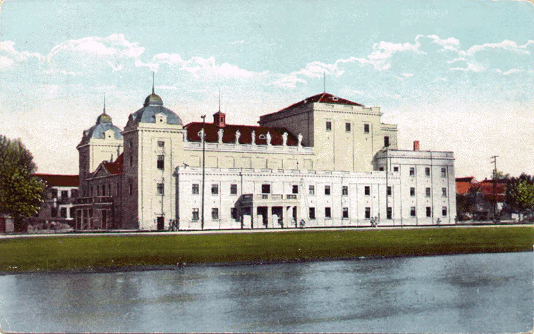
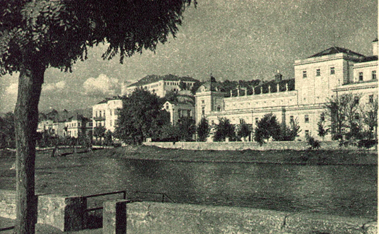
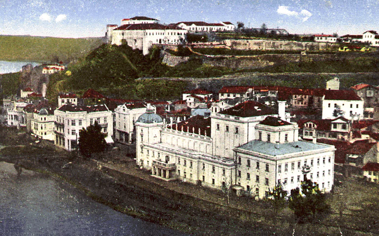

Përshkrimi
Kafeneja e vjetër "Boges", ku mbaheshin shfaqjet e para teatrore deri në fillim të shekullit XX. Më 1902 ndërtohet teatri i parë.

Teatri turk, ndërtuar më 1902. - fillimi i shekullit XX.

Teatri turk me një pjesë të lagjes hebreje dhe Kalanë e Shkupit. (fillimi i shekullit XX)

Hyrja kryesore e Teatrit Kombëtar. - vitet 1930. U hap solemnisht më 26 tetor 1927. Arkitektë: J. Bukovac, E. Brandstein, S. Beljaevski, D. M. Leko, Petar Gočić dhe V. Mesner.

Hyrja kryesore e Teatrit Kombëtar. - vitet 1930

Teatri Kombëtar me Kalanë e Shkupit. (vitet 1930)

Teatri Kombëtar. (vitet 1930)

Teatri Kombëtar - natën. (vitet 1930)

Pamje drejt Teatrit Kombëtar dhe urës së vogël prej druri. (vitet 1930)

Teatri Kombëtar. (vitet 1930)

Pamje e Teatrit Kombëtar nga ura e vogël prej druri. (vitet 1930)

Ura e vogël prej druri dhe Teatri Kombëtar - vitet 1930.

Ura e vogël prej druri dhe Teatri Kombëtar - vitet 1930.

Teatri Kombëtar dhe ura prej druri - vitet 1930.

Teatri Kombëtar - vitet 1930.

Pamje nga bregu i djathtë i Vardarit drejt Teatrit Kombëtar dhe Kalasë së Shkupit - vitet 1930.

Pamje nga ana lindore e Teatrit Kombëtar. Në sfond janë masivet e Malit Sharr - vitet 1930.

Teatri Kombëtar dhe Kalaja e Shkupit - vitet 1930.

Fotografi e bërë nga Shtëpia e Oficerëve - rreth vitit 1930. Pamje e mrekullueshme e Teatrit Kombëtar, urës së vogël prej druri dhe Kalasë së Shkupit.

Teatri Kombëtar me Kalanë e Shkupit - vitet 1930.

Teatri Kombëtar, një pjesë e urës së vogël prej druri dhe disa shtëpi të reja. Në pjesën e sipërme duket Kalaja e Shkupit - vitet 1930.

Teatri Kombëtar dhe një grup shtëpish moderne e shtëpish të lagjes hebreje. Djathtas duken disa nga shtëpitë ekstravagante të lagjes hebreje. Mbi teatrin duket Kalaja e Shkupit - vitet 1930.

Teatri Kombëtar dhe lagjja hebreje, mbi të cilat ngrihet Kalaja e Shkupit - vitet 1930.

Pamje panoramike e Teatrit Kombëtar, mbi të cilin ngrihet Kalaja me kazermat - vitet 1930.

Pamje e Teatrit Kombëtar nga tarraca e Shtëpisë së Oficerëve - vitet 1930.

Pamje e Teatrit Kombëtar nga tarraca e Shtëpisë së Oficerëve - vitet 1930.

Pamje panoramike e Teatrit Kombëtar, mbi të cilin ngrihet Kalaja - vitet 1950.

Teatri Kombëtar - vitet 1950.
Orientimi

Në hartën e vjetër orientuese
Albumi i fotografive


Tema
 Ujësjellësi4 kartolina
Ujësjellësi4 kartolina Kalaja30 kartolina
Kalaja30 kartolina Urat60 kartolina
Urat60 kartolina Kej58 kartolina
Kej58 kartolina Sheshi46 kartolina
Sheshi46 kartolina Ndërtesat66 kartolina
Ndërtesat66 kartolina Kishat e krishtera19 kartolina
Kishat e krishtera19 kartolina Objektet myslimane33 kartolina
Objektet myslimane33 kartolina Shtëpia e Oficerëve29 kartolina
Shtëpia e Oficerëve29 kartolina Teatri28 kartolina
Teatri28 kartolina Stacioni hekurudhor13 kartolina
Stacioni hekurudhor13 kartolina Shkollat36 kartolina
Shkollat36 kartolina Parqet12 kartolina
Parqet12 kartolina Tregjet18 kartolina
Tregjet18 kartolina Rrugët38 kartolina
Rrugët38 kartolina Panorama I60 kartolina
Panorama I60 kartolina Panorama II30 kartolina
Panorama II30 kartolina Kolazhe55 kartolina
Kolazhe55 kartolina Përmbytjet9 kartolina
Përmbytjet9 kartolina Tërmeti27 kartolina
Tërmeti27 kartolina Shkupi 200026 kartolina
Shkupi 200026 kartolina